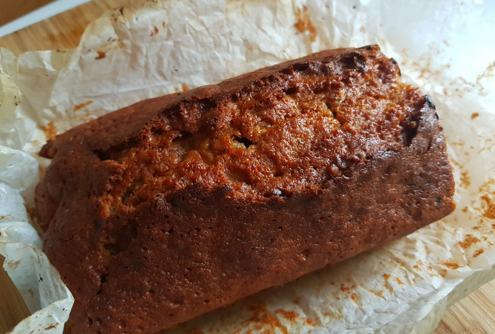

Best served warm or toasted
- 125g margarine (or butter)
- 125g sugar (half white, half brown)
- 2 small eggs, beaten
- 125g flour (farine bise)
- 1 tsp baking powder
- 2 ripe bananas
- Handful walnuts
- Handful dark chocolate chunks

-
Heat the oven to 190C.
-
Line the loaf tin (25cm) with greaseproof paper and lightly butter it.
-
Melt butter/marg in a metal bowl over hot water.
-
Add the sugar, mixing well.
-
Slowly add 2 beaten eggs with half the flour.
-
Add the remaining flour, baking powder and 2 mashed bananas.
-
Cook until a test skewer comes out clean, about 45 minutes.
-
Leave to cool on a wire rack for 10 minutes.
Notes:
Modified from BBC goodfood’s Brilliant Banana Loaf
I added chocolate & walnuts.
Use a thick—based metal saucepan, not a non—stick pan.
Next time, stick banana chips in the top about 10 mins before it is done.